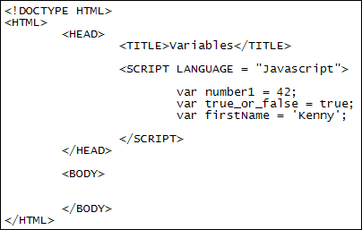
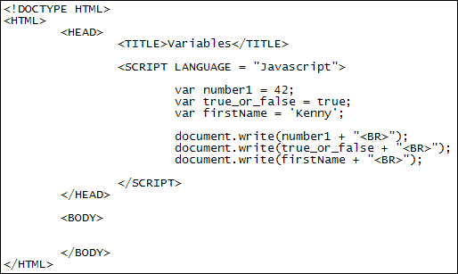
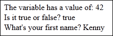

Javascript Variables
In programming terminology, a variable is a storage area. You store things in variables so that you can retrieve them later. Think of variables as small boxes. You can write a number on a piece of paper then place that piece of paper in a box. Write a label on the box, such as "Mom's phone number", and you'll have a quick way to identify what kind of information you have stored in the box. One day, you might even decide to phone Mom. If so, you can quickly locate her phone number by looking at the label on the box and pulling out the piece of paper with her number on it.
In Javascript, when you're setting up a variable you start with the letters var (short for variable, of course). After a space, you then need to come up with a name for your variable (like "Mom's phone number"). The name can be almost anything you want. But there are some important considerations. These:
- You can't have spaces in your variable
- You can't start your variable name with a number
- The variable should contain only letters, numbers ( but not the first character of the variable), a dollar sign ($) and an underscore ( _ )
Here are some valid variable names:
number1
moms_phone_number
$firstName
And here are some that will get you into trouble:
1number
moms phone number
"firstName"
For the ones that will get you into trouble, the first variable starts with a number, the second one has spaces, and the third is surrounded with double quotes.
To store something in a variable, you use an equals symbols ( = ). You can store numbers, strings of text and Boolean values in a variable. (Boolean values are Yes/No, True/False, 1 or 0.) These three, numbers, strings, and Booleans, are called primitive data types. As well as the primitive data types you can also store objects in variables, objects like the Window, Navigator, and Document objects you met earlier.
Let's get some practical work done, though.
Create a new web page for this. You can use the template you created in an earlier section. Add the Javascript tags to the HEAD section of the HTML. In between the Javascript tags, set up the following three variable and their values:
var number1 = 42;
var true_or_false = true;
var firstName = 'Kenny';
Your web page should then look like this:

So we have three Javascript variables set up, all starting with the keyword var. The first variable stores the number 42, the second one stores a value of true, and the third one stores the text 'Kenny'. Notice that the first two variables, the number and the Boolean, don't need any quote marks. The third one does, however: if you want to store strings of text they need to go between quotations marks, either single quotes or double quotes, but not a mixture of the two.
Now add the following write lines to your code
document.write( number1 + "<BR>" );
document.write( true_or_false + "<BR>" );
document.write( firstName + "<BR>" );
So we're using document.write to see what's inside of the variables. (The + "<BR>" is just so that each variable will be printed on a line of its own.)
Your Javascript should look like this:

Make sure you end each line with a semicolon ( ; ). Make sure, too, that you have a space between var and the variable name. You don't actually need a space to the left and right of the equal symbol, but it helps to make your code more readable.
Save your work and load your web page in a browser. You should find the following written to your page:
42
true
Kenny
So what just happened? Well, we stored three values in three variables. We retrieved these values by just using the variable names. For example, if you had the code alert( number1) the alert box would display the value 42, which we stored in the variable we called number1. In other words, to get at the value itself, you just use the variable name.
You can use concatenation with variable names. For example, you can do this:
document.write( "The variable has a value of: " + number1 + "<BR>");
Here, we've combined the text "The variable has a value of: " with the variable name number1. We did the combining (concatenation) with the plus symbol ( + ). Try it yourself. Amend your document.write code so that it looks like our below:
document.write( "The variable has a value of: "
+ number1 + "<BR>");
document.write( "Is it true or false? " + true_or_false + "<BR>");
document.write( "What's your first name? " + firstName + "<BR>");
Make sure you get the quotation marks and the plus symbols in the right place, otherwise your code won't work. (You don't have to use double quotes, single quotes work just as well. You can't have a double quote at the start, though, and a single quote at the end.)
The results in a browser should look like this:

Variable Assignment
When setting up a variable, we did this:
var number1 = 42;
But you don't have to store a value in the variable all on the same line. You can use two lines instead:
var number1;
number1 = 42;
The first line here creates a variable called number1. But there's nothing stored in it. The second line is where we store something in the variable. Note that the var has now gone missing - you only need to use var once when you're setting up your variables.
You can also assign a different value to a variable. For example, you can do this:
var number1;
number1 = 42;
number1 = 100;
Javascript is a sequential programming language, meaning lines get executed from top to bottom. What we've done above is to first assign a value of 42 to the variable called number1. The third line stores a new number in this same variable. The two are not added together. When you assign a new number to a variable, it will erase the old contents. So the variable number1 will now hold a value of 100.
You can also overwrite the number 42 with a string of text. Like this:
var number1;
number1 = 42;
number1 = "one hundred";
This time the text "one hundred" is stored in the variable called number1, even though previously the variable held a number. Other languages wouldn't let you do this. If you set up a variable to hold a number then an error would be raised if you tried to store text in it. Javascript, however, doesn't care.
In the next lesson, you'll learn about the mathematical operators in Javascript.